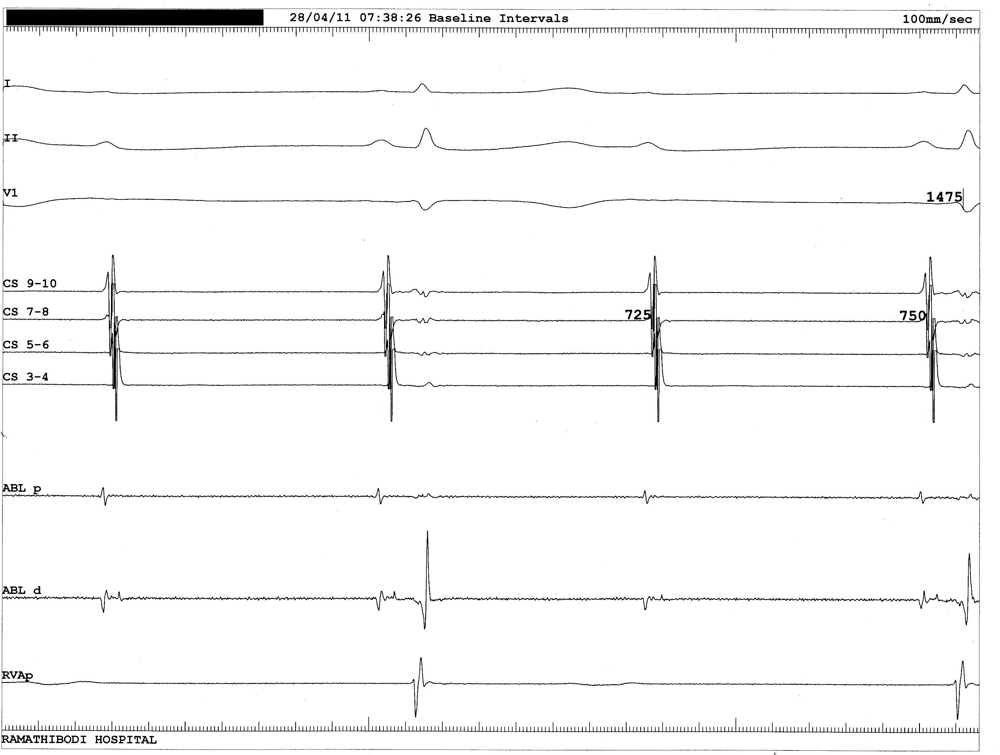

Tracing = Sinus rhythm with Mobitz I second-degree AV block (Wenckebach)
and a normal QRS interval and morphology.
EGM shows progressive lengthening of AH interval before nodal block.
In a healthy subject with high vagal tone at rest, AV Wenckebach may be a normal finding.
No specific therapy is warranted for this incidental finding.
An event recorder would be a reasonable diagnostic test to further assess the palpitations.
Below is an example of infra-Hisian block, which is more pathologic.
